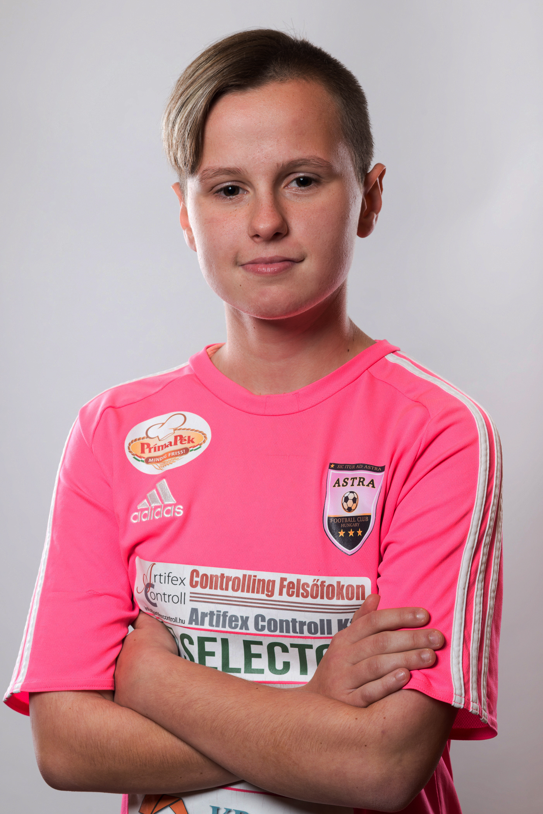

GYOLCSOS GYÖNGYI

2002.02.12.
96
Középpályás
Az Astra igazolt játékosa 2018 óta
...csapata:Real Madrid
...játékosa:Luka Modric, Toni Kroos
...étele:Mákos guba
...itala:Rostos gyümölcslé
Példakép: Dér Henrietta
“Non avvicinarti negativamente alle cose, tratta il fallimento come un compito da risolvere.”